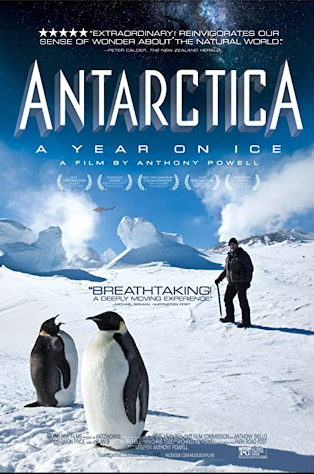
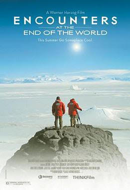
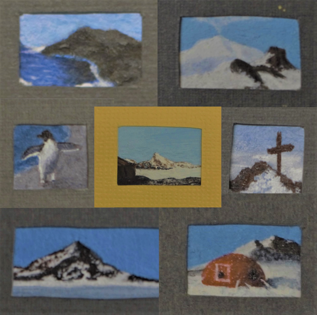
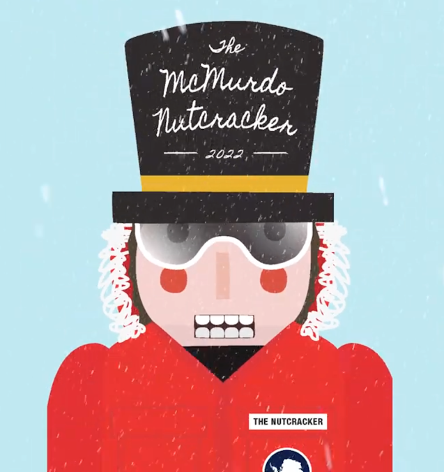
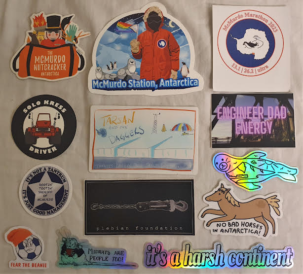

Longren Antarctic Newsletter #06 - 06.02.2023 ------------------------------ Dearest people, Over the past months, there has been a question that I've found difficult to answer: how do I convey my experiences here to you, the reader, in a way that is meaningful. In the end, I've concluded that I cannot do so alone. Despite this, there are others who have had more time, a different skill set, and overall a better opportunity to paint a picture of what life is like here. I welcome you to what I'll call Antarctic Art: Capturing the Heart, a brief description of the artwork I have admired here. Documentaries Among the handful of Antarctic motion pictures I have seen, the one holding my highest recommendation would be the 2013 semi-amateur documentary "Antarctica: A Year on Ice" by Anthony Powell. If you, lovely newsletter reader, receive anything at all from my writing, please let it be having watched this film. It tells the story of what this place entails better than I could ever do, created by someone who has been right in my shoes. Filmed across a decade of seasonal work, the documentary captures all aspects of life as a human here; I could not recommend it to you more.  A pair of documentaries that I highly recommend. Another enjoyable documentary about Antarctica is the 2007 "Encounters at the Edge of the World" by Werner Herzog. If you've already seen the documentary by Powell and are yearning for more, check this one out. Although it is filmed from a somewhat outside perspective, it leans into the science side of things well and has many funny moments. I would call it a non-traditional, thoughtful, and humorous overview that is more surface-level than "A Year on Ice". Check it out. Tiny Paintings Beyond high-visibility documentaries, there is a large amount of local art that isn't often seen off of the continent. One example of unique art from Antarctica are a collection of tiny paintings depicting the neighboring scenery. Below are a sample of paintings from the recent coffeehouse coat closet exhibit, titled "Petite Polar Perspectives: Antarctica's Smallest Paintings". Created by resident artist and janitor, Katie Kerpel, each painting measures less than four inches in width, with the smallest being only a half-inch wide. Bite-sized!  Top left to bottom right: Hut Point Beach, Erebus & Castle Rock, Penguin on Shore, The View from Hut Point, Ob Hill Summit, Ob Hill, and The Big Apple. The Ballet A year ago, the first known ballet performance in Antarctica was made. The story was appropriately chosen: The McMurdo Nutcracker. A spin-off of the original Nutcracker, the ballet follows a traveler as they make their way to Antarctica for the first time. As they fall asleep on the plane, their dreaming of all the wonderful, weird, and scary things they will encounter comes to life. The performance took a significant percentage of the station population (over 15%) to put on and turned out amazing (believe me, I watched the recording). Given the location, I was expecting a boring, unimpressive performance, but couldn't be more wrong. The cast and crew did so much with so little available to them. One can truly dance anywhere.  The poster for the McMurdo Nutcracker. Stickers Lastly, I've found that people around here really like their stickers! Here are a couple that I've collected; I contributed one myself (the Kress sticker, to honor the behemoth). Each sticker commemorates either a local object, idea, event, social commentary, or seasonal running joke.  Antarctica stickers! Other Stuff Beyond the art that I've included here, there is an immense amount of other beautiful work being made here on station. Indicative of this fact is the stocked craft room, as well as the annual craft fair and art gallery. Not to mention art aplenty hanging on walls and filling the halls with creative charm. I hope you enjoyed this small snippet of it all. Now, go watch "A Year on Ice"! Take care, Luke ------------------------------ ------------------------------ If you think that someone would be interested in learning about the Antarctic and what working there is like, please do forward this letter to them. If you would like to be removed from this newsletter, just email me and I can do so. Lastly, if you have any questions about life, work, or anything else regarding Antarctica, send me an email and I can try to answer your question in the next letter. Thank you! |